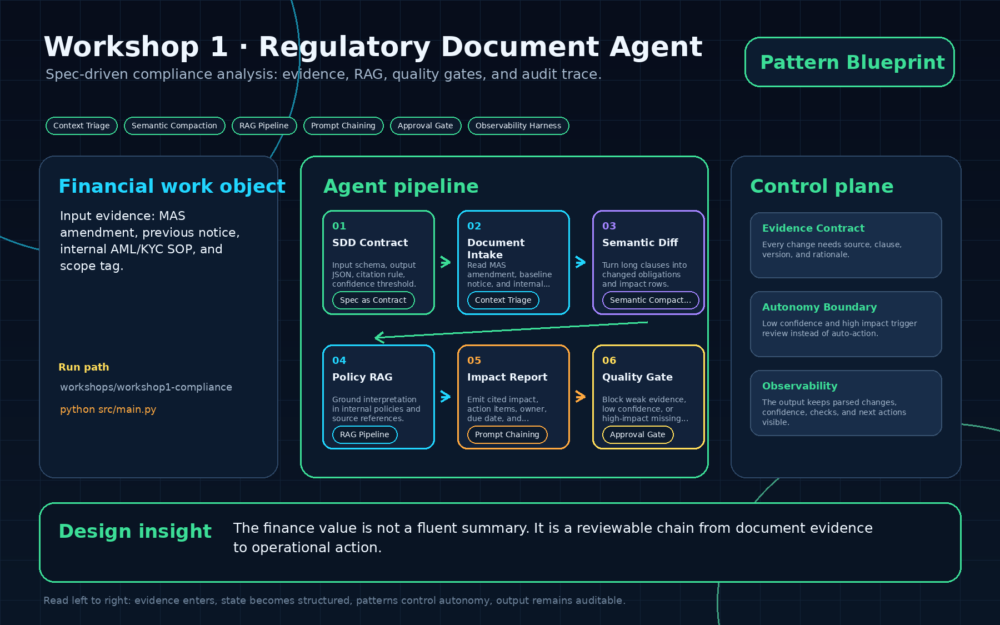
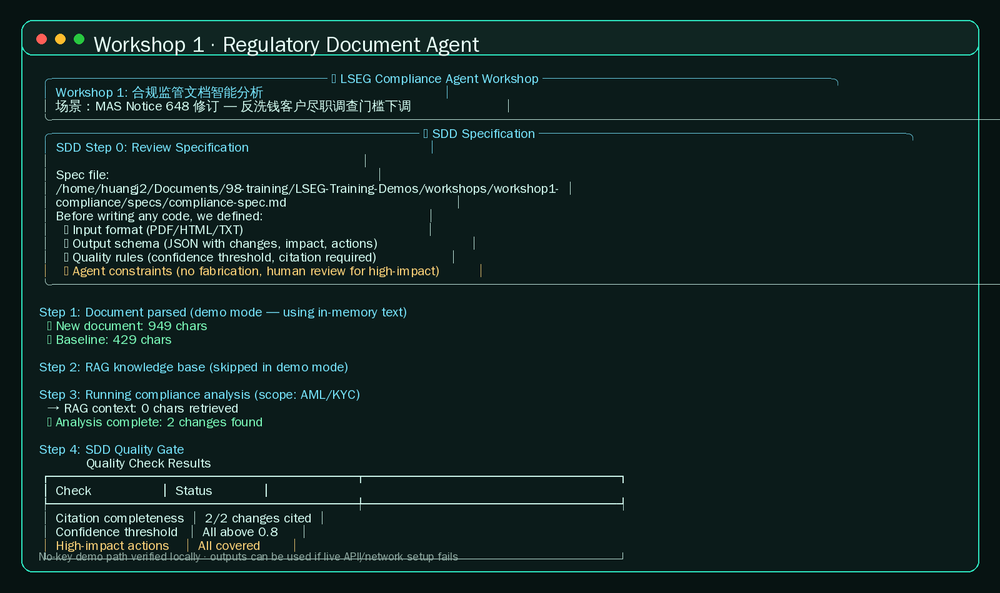

01
SDD Contract
Input schema, output JSON, citation rule, confidence threshold.
Spec as ContractSpec-driven compliance analysis: evidence, RAG, quality gates, and audit trace.

Input schema, output JSON, citation rule, confidence threshold.
Spec as ContractRead MAS amendment, baseline notice, and internal AML/KYC SOP.
Context TriageTurn long clauses into changed obligations and impact rows.
Semantic CompactionGround interpretation in internal policies and source references.
RAG PipelineEmit cited impact, action items, owner, due date, and severity.
Prompt ChainingBlock weak evidence, low confidence, or high-impact missing action.
Approval Gatecd workshops/workshop1-compliance python3 -m venv .venv source .venv/bin/activate pip install -r requirements.txt cd src python main.py

Every change needs source, clause, version, and rationale.
Low confidence and high impact trigger review instead of auto-action.
The output keeps parsed changes, confidence, checks, and next actions visible.
The finance value is not a fluent summary. It is a reviewable chain from document evidence to operational action.